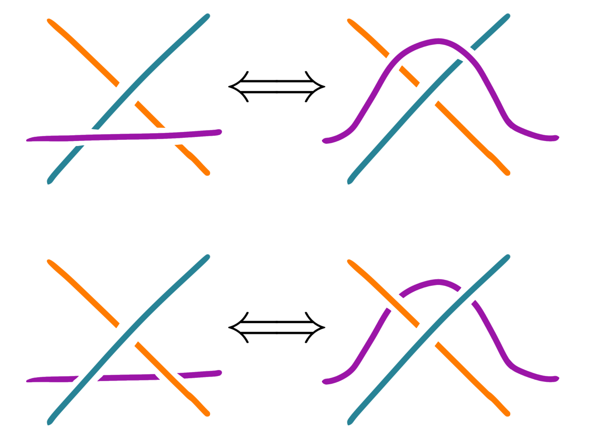

Quantum Topology Seminar
Abstract: Many knot invariants come from representation theory. For example, any (simple) Lie algebra \(\mathfrak g\) and a representation \(V\) we can define \((\mathfrak g,V)\)-invariants, which in the simplest example of \((\mathfrak g,V)=(\mathfrak{sl}_2,\mathbb C^2)\) recovers the Jones polynomial. Possible topics for the semester are Reshetikhin-Turaev invariants and Khovanov homology.When? Wednesdays 12-1
Where? Fine 1001
Also enjoy the following picture I stole from my RSI student Sophia:

Schedule
click on the titles for the abstractSeptember 10
Kenta: Organizational meeting (introduction to the Jones polynomial)We will define the Jones polynomial, discuss some representation-theoretic perspectives on it. We will also discuss what directions to take the seminar, and distribute the first few talks.
September 17
Meenakshi: Review on knot theoryWe will introduce the basics of knot theory starting with basic definitions and examples, and using knot diagrams and Reidemeister moves to work more concretely with knots and links. The main focus of this talk will be on the relation between knots and braids and understanding the braid group. We will conclude by discussing (as time permits) several classic link invariants such as the Alexander and Jones polynomials introduced by Kenta last time, and briefly introduce coloring invariants.
September 24
Dhruv: A Rapid Introduction to Representations of Lie AlgebrasWe will motivate and review the theory of (finite-dimensional complex semisimple) Lie algebras and their representations using highest weight theory, focusing on the fundamental case of \(\mathfrak{sl}_2\). On the way, we will introduce the universal enveloping algebra \(U(\mathfrak{g})\) of a Lie algebra \(\mathfrak{g}\) and explain why it is useful, setting up the stage for its quantum deformation—the quantum group \(U_q(\mathfrak{g})\)—for the next talk. If time permits, we will discuss Schur-Weyl duality in the concrete case of \(\mathfrak{sl}_2\).
October 1
Quanlin: Introduction to Quantum GroupsWe motivate and introduce the general notion of Hopf algebras. We motivate and write down a specific (family of) Hopf algebra(s) \(U_q(\mathfrak{sl}_2)\) known as the quantum group for \(\mathfrak{sl}_2\), which is a one-parameter deformation of \(U(\mathfrak{sl}_2)\) that is neither commutative nor cocommutative, unlike the cocommutative \(U(\mathfrak{sl}_2)\). We classify finite-dimensional representations of \(U_q(\mathfrak{sl}_2)\) and introduce the \(R\)-matrix to measure the non-cocommutativity. We finish by commenting on the relation between this story and the braid group.
October 8
Kenta: Constructing the Jones Polynomial via Quantum GroupsLast week Quanlin told us about the quantum group \(U_q(\mathfrak{sl}_2)\) and how it gives solutions to the Yang-Baxter equation. In particular, the \(R\)-matrices give rise to a representation of the braid group \(B_n\) on \((\mathbb C^2)^{\otimes n}\). Using Markov's theorem about braid closures, we will prove the (slightly modified) trace is a knot invariant. We furthermore prove it gives the Jones polynomial by checking the skein relations.
October 15
Fall RecessOctober 22
Meenakshi: Introduction to the Temperley-Lieb algebraThe Temperley-Lieb algebra is a quotient of the group algebra of the braid group which plays an important role in knot theory. We will introduce these algebras and their diagrammatic calculus, and discuss their irreducible representations.
October 29
Zongshu: Classical and Quantum Schur-Weyl dualityIn this talk, we will give a detailed proof of Schur-Weyl duality, which roughly states that the images of \(\mathbb C[S_n]\) and \(U(\mathfrak{sl}_m)\) in \(\mathrm{End}((\mathbb C^m)^{\otimes n})\) have representation theories that are closely related. For the case \(m = 2\), we will give some examples to illustrate quantum Schur-Weyl duality, a generalization of Schur-Weyl duality to the deformed algebras \(\mathcal H_n(q)\) and \(U_q(\mathfrak{sl}_m)\), and we will relate it to the Temperley-Lieb algebra \(\mathrm{TL}_n(\delta)\).
November 5
Jessica: Bar-Natan's categorification of the Temperley-Lieb algebraWe will review the Temperley-Lieb algebra and sketch how one may recover the Jones polynomial from this algebra. We will then turn to the problem of categorification. We will define Bar-Natan’s cobordism category and prove that it decategorifies to the Temperley-Lieb algebra. Time permitting, we will prove invariance of the Bar-Natan category. This talk will be largely diagrammatic!
November 12
TBA: TBATBA
November 19
TBA: TBATBA
November 26
TBA: TBATBA